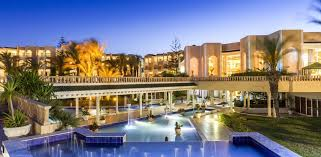
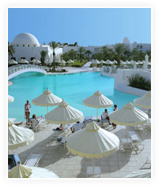

ministère du tourisme
Yasmine-Hammamet
Dans les grands espaces naturels qui s’étendent au sud de Hammamet, le long d’une mer de saphir bordée d’un long ruban de sable doré, Yasmine Hammamet – “le jasmin de Hammamet”– est une nouvelle station intégrée, luxueuse, moderne et animée. Un cadre d’exception pour découvrir la Tunisie.
Sousse-Port El Kantaoui
De hauts palmiers, des forteresses millénaires et des remparts qui surplombent de longues plages de sable fin : telle se présente la côte du Sahel tunisien.
Sousse, ville de contrastes, est à la fois une ville d’histoire et une cité moderne et animée. Sa médina intacte laisse une vive impression, avec ses hauts remparts de pierre dorée face à la mer, ses souks et ses ruelles, ses monuments patinés par le temps, tandis que les quartiers modernes montrent leur dynamisme avec leurs avenues bordées de palmiers, le port et les nombreux commerces et lieux d’animation.
A proximité de Sousse, la station intégrée de Port El Kantaoui porte fièrement son surnom de « premier port-jardin de la Méditerranée ». entièrement construit dans un style tunisien d’inspiration arabo- andalouse, Port El Kantaoui est un ensemble homogène et verdoyant d’hôtels, de résidences, de commerces et de lieux de loisirs, dont le cœur est constitué par un port de plaisance de 340 anneaux et un superbe terrain de golf.

Ile de Djerba-Zarzis
Au cœur de la Méditerranée, l’île de Djerba charme par son atmosphère unique au monde, faite de simplicité lumineuse et d’envoûtante sérénité.
Aux portes du Sahara, elle offre ses plages de rêve bordées de palmiers sauvages; une destination devenue commode grâce à un aéroport international actif, des routes rénovées et de nombreux hôtels de catégorie supérieure. Avec, depuis quelques années, une spécialité, la thalassothérapie : la région compte une quinzaine de centres dont certains s’inscrivent parmi les meilleurs du pays.
ée à Djerba par la Chaussée romaine (route construite dans l’Antiquité), Zarzis est une ravissante station balnéaire à côté d’une vaste palmeraie.
On appréciera ses longues plages de sable fin, le charme de ses traditions et le confort de ses hôtels à l’architecture typique.
| ZONE | Sousse | Hammamet | Djerba | ||||||||
|---|---|---|---|---|---|---|---|---|---|---|---|
| Etoiles | 3 | 4 | 5 | 3 | 4 | 5 | 3 | 4 | 5 | ||
| Prix | 55DT | 90DT | 110DT | 65DT | 80DT | 150DT | 85DT | 105DT | 135DT | ||
TOP 10
SIGN UP
your nameDate of birth